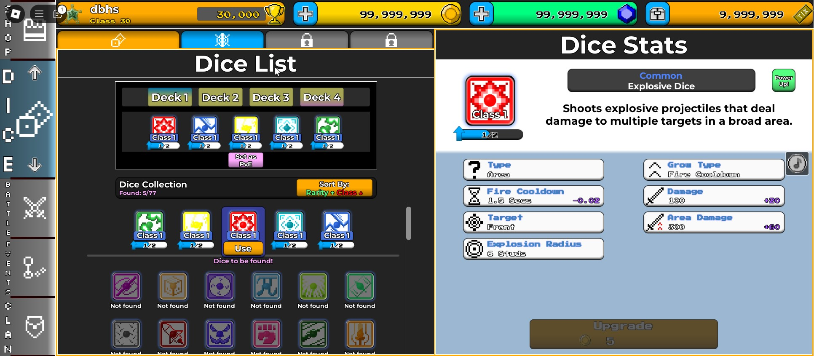
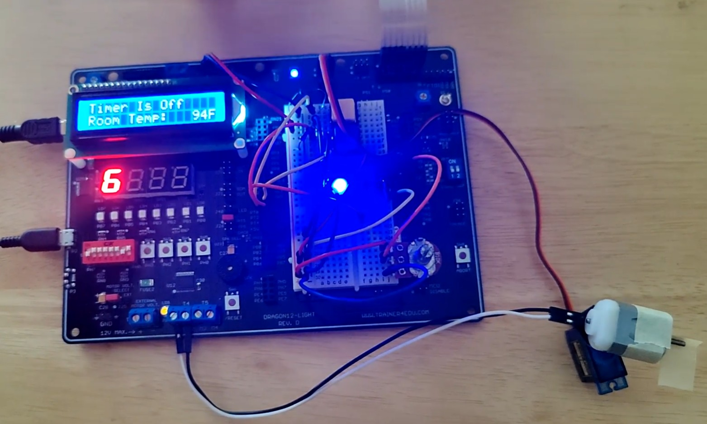
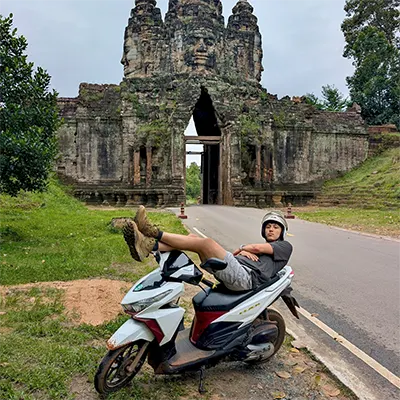
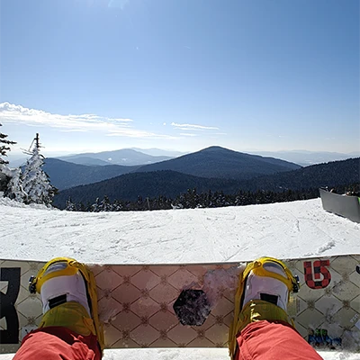
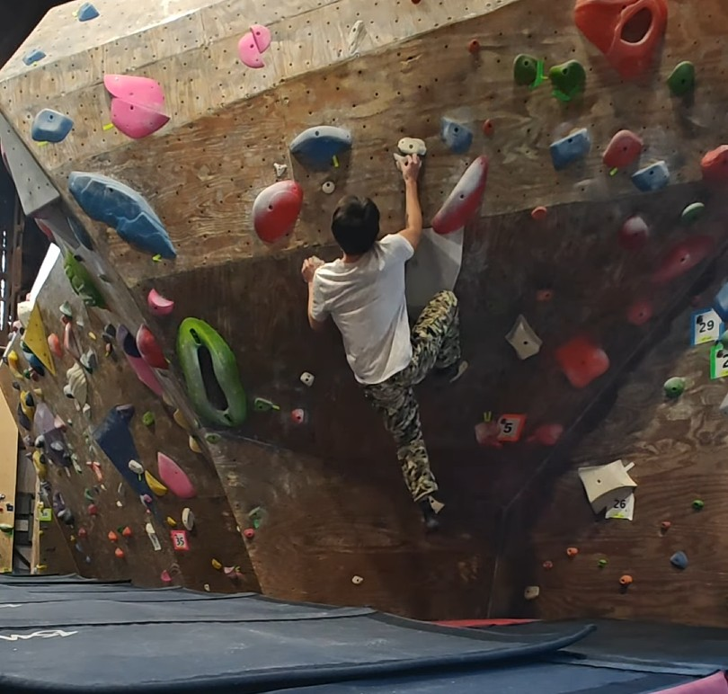

Crazy Dice Tower Defense
A retro-stylized tower defense experience centered around strategic deck-building and dynamic dice mechanics.
- ⚡ Active Development
- 🔥 55k+ Visits
- Luau
- Game Design
- Multiplayer (PvP/PvE)
- GUI Architecture

A retro-stylized tower defense experience centered around strategic deck-building and dynamic dice mechanics.
An API-documented, robust automation framework bridging the gap between simple macro recorders and complex software development.


An embedded systems project simulating an automated smart fan on a Dragon12-Light microcontroller. Engineered in bare-metal C and Assembly to process real-time sensor data for temperature-based automation and precise motor control.
Life away from the keyboard.



Currently open for new opportunities and collaborations.